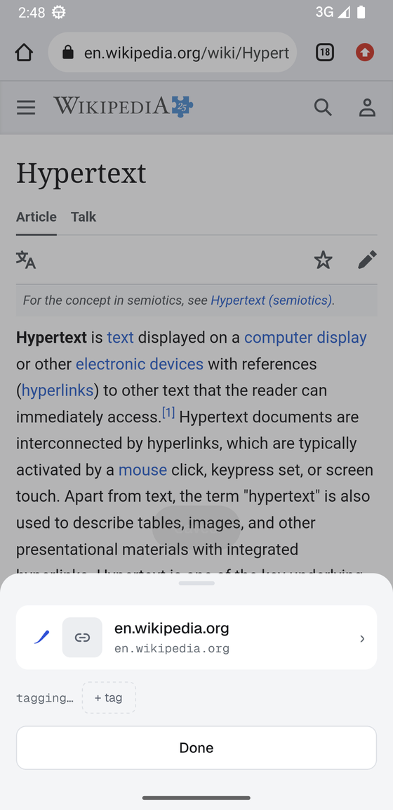
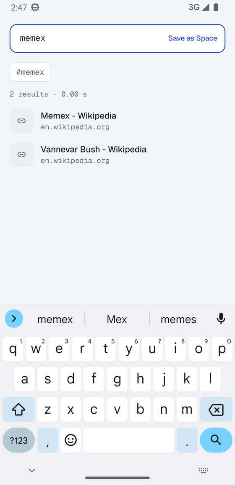

save from anywhere
Share a link, image or text from any app and a small sheet appears over the app you came from. The card folds into the trace mark, you see “Saved”, and you can add tags or put it in a Space without leaving what you were doing.

tags without a model
Every save gets tags on its own: proper nouns and repeated terms from the page, text read out of images, the site it came from. Turn on Intelligence and the model you chose adds richer tags, a summary and semantic search — its tags look and behave like your own.
search that reads the whole page
Articles are saved with their full text and indexed, so a search finds the word inside the piece, not only in the title. Operators narrow things down; press Enter to turn a term into a chip and keep typing. A search you want to keep becomes a Space.
tag: type: site: text: before: after: “phrase” -not

resurface
Cards you have not opened in a while come back a few at a time. Strengthen the ones that still matter, let go of the rest. Letting go keeps a card for 30 days, and Undo is one tap away.
sync through storage you already own
Link a second phone by scanning a code and your library syncs through your Google Drive, iCloud Drive, or any WebDAV server. Everything is encrypted before it leaves the device, with a key only you hold — written down as 12 words. The provider sees file sizes and timestamps, nothing else.
leave whenever you like
Export is a zip with your original files, JSON, a CSV with every tag and summary, and markdown notes you can drop into Obsidian. Import takes a mymind export, Raindrop and Pocket CSVs, browser bookmarks, and markdown folders.